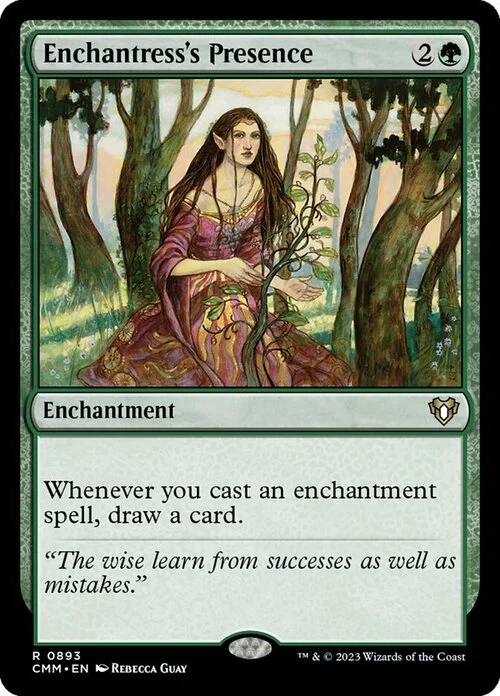
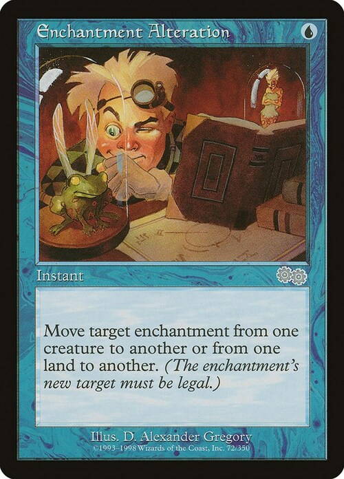
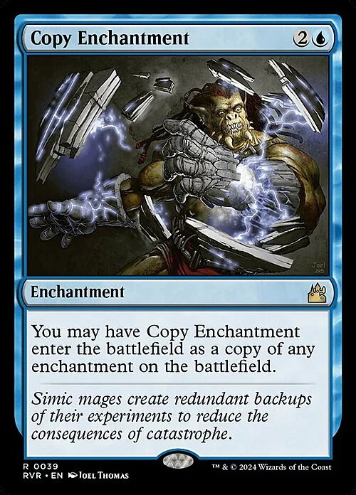

Magic the Gathering
The Lost Caverns of Ixalan
Cartas coleccionables
The Lost Caverns of Ixalan
Cartas coleccionables
 |
CriaturasCriatura (en Inglés, creature) es un tipo de carta que representa ciertos permanentes en Magic. Hablando de la ambientación, las criaturas representan a guerreros, sicarios, bestias y monstruos que sirven al jugador, generalmente para luchar de su parte. Dado que casi todas las criaturas pueden atacar cada turno para reducir la vida del oponente, o pueden bloquear a los atacantes del oponente, las cartas de criatura son fundamentales para gran cantidad de estrategias de mazo. |

Presencia de hechiceraEs una hecichera que... está... presente |

Encantamiento de alteraciónComo cuando tomas demasiado Red Bull o algo así. |

Encantamiento copiaEl "Ctrl + c" de los encantamientos. |
Copyright Magic the Gathering